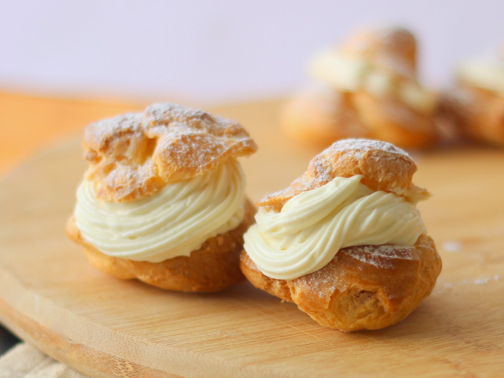

Creme Patisserie aka Pastry Cream

Description
Creme Patissiere, known as pastry cream in English, is a vanilla-flavored custard filling similar to pudding which is used in a wide variety of French fruit tarts and pastries
Ingredients
- ½ cup sugar
- ¼ cups cornstarch
- Pinch of salt
- 2 cups milk room temperature
- 4 yolks
Steps
- Add wet to dry in saucepan, whisk as pouring in wet mixture
- Add 2 tblspn (25g) butter.
- Turn heat on to medium to boil 1 min
- Add flavouring, 1 tblsp vanila/ espresso
- Strain to get rid of egg lumps.
- Pour out to a large flat pan to cool.
- Cover with cling wrap to the surface.
- Chill in fridge, 2 hrs.
Back to Main